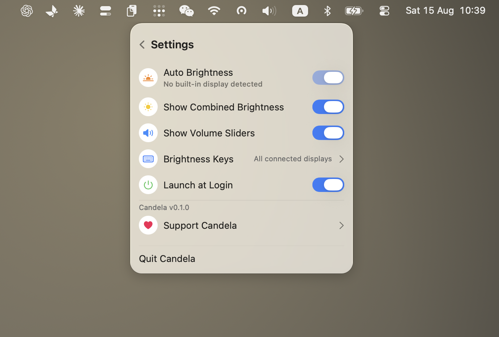

Make the brightness keys work on an external monitor
The short version: macOS routes the brightness keys to the built-in display only. Nothing is broken — there is simply no code path from those keys to a third-party monitor. An app has to intercept the key press and translate it into a DDC command the monitor understands, which needs one Accessibility permission.
Why the keys do nothing
The brightness keys are not ordinary keys. They generate system-level events that macOS handles internally and sends straight to the built-in panel's backlight driver. An external monitor's backlight is not on that path: it is behind the display cable, controlled by DDC/CI, a small command protocol that runs over the same wire as the video signal.
So on a Mac mini or a clamshell MacBook, the keys have nothing to talk to at all. On an open MacBook with a monitor attached, they adjust the laptop screen you are not looking at.
Setting it up
- Download Candela and open the panel from the menu bar.
- Go to Settings.
- Turn on Use brightness keys on external displays.
- macOS asks for Accessibility permission. Grant it — this is what lets an app see a key press before the system consumes it. No restart is needed.

Once granted, the row becomes a target picker.
Choosing what the keys control
There is no single right answer, so Candela offers four and remembers which you chose.
Follow the pointer. The keys adjust whichever display the cursor is on. Precise, and the right default for a desk where the monitors serve different purposes — but you have to move the mouse before you press.
All connected displays. Every display moves by the same step. Simple, until they drift apart: a display that hits zero stops while the others keep going, and nothing brings them back into line.
All displays together. The keys move a single combined level, and each display is driven to its share of it. This is the one to choose if you want the whole desk to brighten and dim as one unit — the displays stay locked at both ends instead of diverging. It also honours the per-display calibration described in syncing brightness across monitors.
Selected displays only. You pick which displays participate. Useful when one screen is a TV or a colour-critical panel you never want touched.
When the keys still do not work
Two very different failures look identical from the outside, so check them in order.
The permission is granted but nothing happens. Look at System Settings → Privacy & Security → Accessibility. If Candela is listed and switched on and the keys are still dead, the entry is stale — macOS binds the grant to the exact signed copy of the app that asked for it, and an entry left over from an earlier version no longer matches. Remove Candela from the list with the "−" button and enable the feature again so it re-asks.
One display responds, another does not. That is not a keyboard problem, it is a DDC problem — see below.
Another app is also redirecting them. MonitorControl, BetterDisplay and Lunar all intercept the same keys. Two of them running at once produces double steps or a fight. Keep one.
When one monitor ignores brightness entirely
Some displays refuse DDC/CI. When Candela detects a refusal it falls back to dimming the picture in software and marks that display Software in the panel, so you can tell the difference between "the backlight moved" and "the image got darker".

Three things to try, in order of how often they are the cause:
- Turn DDC/CI on in the monitor's own menu. It is off by default on some models. Look under Settings, Other Settings, or OSD — the name varies by manufacturer.
- Connect the monitor directly to the Mac. Docks and hubs are the most common cause: many pass video perfectly and drop the DDC channel. If brightness works on a direct cable and not through the dock, the dock is the answer.
- Try the other port on the monitor. On some displays DDC works over DisplayPort or USB-C but not over HDMI.
If none of that helps, the software fallback still dims the display — it changes the image rather than the backlight, so blacks lift slightly at low levels, but it is a usable brightness control.